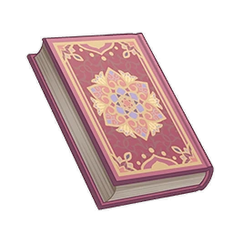

Sumeru · Books & Literature
Scroll of Streaming Song
This three-part Sumeru collection preserves damaged pages of an ancient dialogue between the Mistress of Pushpavatika and an unnamed Princess, with Akademiya scholars’ uncertain annotations. Its author is explicitly unconfirmed; Version 6.6 later uses a verse from it in Collei’s encounter with the Jinn.

Damaged pages and an unknown author
The three volumes are torn pages found in desert ruins and retrieved by researchers from the Vahumana Darshan. Each page says that its author has not been confirmed. The current item data should not credit Nabu Malikata as the writer.
The books preserve editorial marginalia from the Akademiya scholars Yarshater and Tafazzoli. Their disagreement over translations and missing words is part of the record: the modern researchers themselves cannot reliably identify the people being described.
Volume I: the Mistress and the Princess
Volume I opens in the middle of a conversation. The Mistress of Pushpavatika addresses an unnamed Princess, praises the Winged One, and asks the Princess to solve three riddles in exchange for gifts. The Princess answers with praise of the Winged One and says that knowledge is more valuable than the offered treasure.
The scholars’ notes dispute the translation of terms describing a place and clothing, and one scholar says the notes have made them even more confused about the author’s subject. The text names neither the Princess nor the Winged One.
Volume II: the rose and the universal law
The first riddle asks what is cold while alive and gives warmth after death. The Princess answers that it is a rose, describing its flowers being used for perfume and its stems for lamp wicks. She says a “king in red” admires the flower, but the page does not identify that king.
The second riddle asks about a law that rises from the earth and descends from the sky, sees all, and governs above and below. The Princess answers that it is the universal law created in heaven and warns against arrogation, deception, trickery, and forbidden arts.
The line about forbidden arts may be compared with other sources about Khaenri’ahn Khemia, but the book does not name Khaenri’ah or spell out that equation. Keep the connection labeled as interpretation.
Volume III: an alliance in a damaged fragment
The third page is the most incomplete. It preserves a short statement about people rejoicing and an incomplete line about what will happen because of them, followed by extensive notes where Tafazzoli proposes several possible words for the missing text.
The remaining passage says that the Princess answered all three riddles and that the Mistress admired her wisdom. It then describes an alliance between the Princess, the Mistress, and a king whose title is only partly preserved. Those roles invite comparison with Sumeru’s ancient figures, but the page’s damage and unnamed characters prevent a firm identification from the book alone.
The verse in Version 6.6
During A Divergence Leading to Oneself, Nicole prompts Collei to repeat a verse matching Volume I: “I am a spirit created at the beginning,” followed by lines about a flickering illusion and light from the creator’s eyes. The party is facing Jinn at Aaru Village.
A local scholar recognizes the verse as a song composed by the Goddess of Flowers. The Jinn quiet when Collei recites it, but attack when Firnas repeats the same words. The quest makes the book’s verse relevant to current events while leaving Collei’s special connection and the full mechanism unexplained.
Separate the page’s names from later readings
The book gives roles rather than names: the Mistress of Pushpavatika, the Princess, the Winged One, and a partially named king. Readers often associate those roles with Nabu Malikata, Greater Lord Rukkhadevata, the Heavenly Principles, and King Deshret, but the damaged pages do not make each identification explicit.
The strongest direct cross-reference is the Version 6.6 quest’s identification of the verse as a song by the Goddess of Flowers. That supports an association for the song without establishing the identity of every speaker or proving the full story as written.
This is an original CoreGG reading guide, not an official HoYoverse article or a reproduction of the game text. Source links below identify the records used so you can check the original context.
Sources & references
Check these sources for the original game text and reference trail.